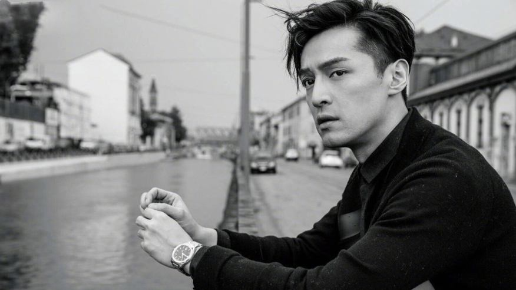
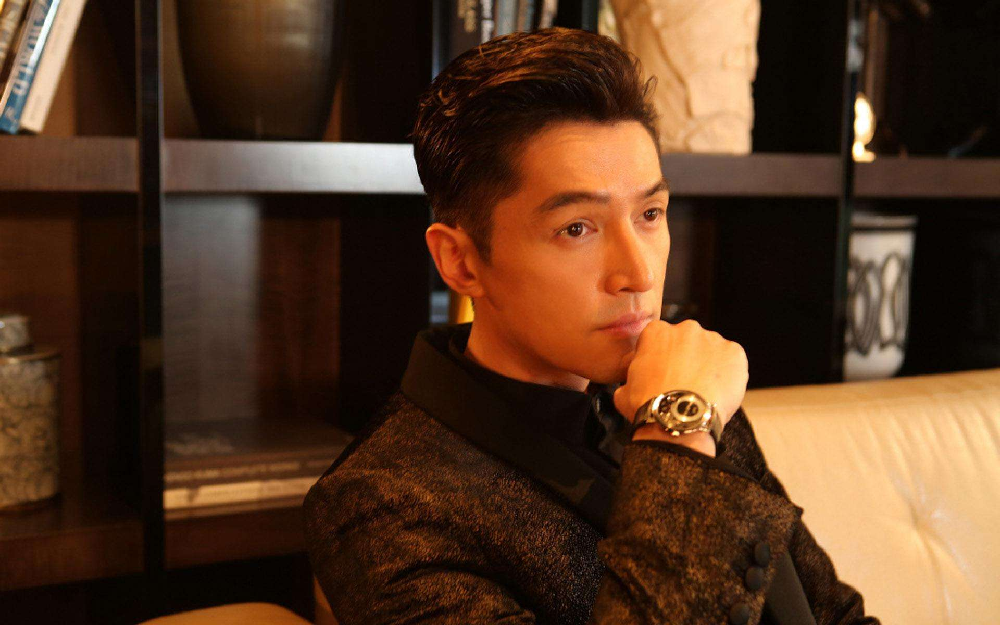
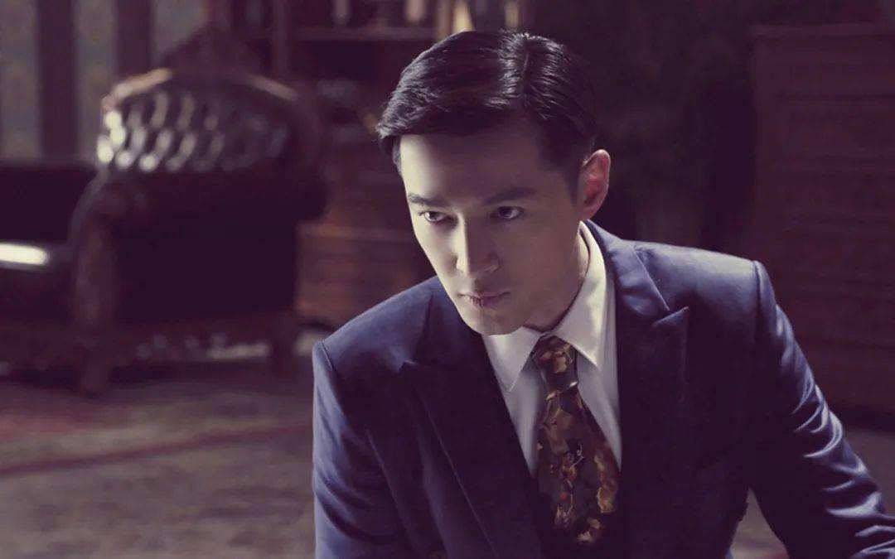

胡歌
胡歌，1982年9月20日出生于上海市徐汇区，中国内地影视男演员、流行乐歌手，民盟盟员 ，毕业于上海戏剧学院表演系。
重要事件
- 1996年，14岁的胡歌便成为上海教育电视台的小主持人。
- 2005年在仙侠剧《仙剑奇侠传》中塑造了“李逍遥”一角，并演唱该剧插曲《六月的雨》《逍遥叹》 。
- 2006年8月遭受严重车祸，2007年6月复出 。
- 2009年主演仙侠剧《仙剑奇侠传三》 ，并演唱片尾曲《忘记时间》 。
- 2010年主演的穿越剧《神话》在央视八套播出 。
- 2011年参演历史题材电影《辛亥革命》提名大众电影百花奖“最佳新人奖”
- 2012年主演玄幻剧《轩辕剑之天之痕》 。
- 2013年主演两部话剧，凭借《如梦之梦》获得北京丹尼国际舞台表演艺术奖“最佳男演员奖” 。
- 2014年参演战争剧《四十九日·祭》提名上海电视节白玉兰奖“最佳男配角奖” 。
成就和荣誉
- 【2011年度 「星尚大典」— 人气先锋人物奖】
- 【2011年度 「国剧盛典」— 内地年度网络最受欢迎男演员】
- 【2011年度 「优酷大剧盛典」— 优酷指数最受欢迎男演员】
- 【2010年度 「摩登上海潮盛典」— 年度潮流人物奖】
- 【2010年度 电视剧「华鼎奖」— 传奇类最佳男演员】
- 【2010年度 电视剧「华鼎奖」—《神话》传奇类最佳电视剧】
- 【2010年度 第1届「中国大学生电视节」—网络人气奖】
- 【2010年度 上半年 福建—最受观众喜爱演员】
- 【2010年度 第16届「上海电视节」—《仙剑奇侠传三》最具网络精神奖】
- 【2009年度 「中娱榜」—内地最具人气男明星】
- 【2006年度 福布斯上榜名人—中国名人奖】
- 【2006年度 第2届「电视剧风云盛典」—内地最具潜质新人奖】
- 【2006年度 第2届「电视剧风云盛典」—内地最受欢迎男演员】
- 【2005年度 雪碧「中国原创音乐流行榜」—《六月的雨》电视歌曲优异奖】
- 【2005年度 天地英雄校园行「天地英雄榜」—东成西就奖】
- 【2004年度 「新耀东方」年度新人颁奖典礼—幻影风尚新锐偶像奖】
主要作品
| 年份 |
作品 |
2014 |
风中奇缘 |
| 2015
|
伪装者 |
| 2016
|
旋风十一人 |
| 2017
|
外科风云 |
| 2018
|
你好，之华 |
| 2019
|
攀登者 |
| 2020
|
独自·上场 |
| 2021
|
繁花 |
生活照



生平
2006年8月29日，胡歌在沪杭高速嘉兴路段遭受车祸，同行的女助理张冕经抢救无效死亡。胡歌经过六个半小时的抢救，身体重创，全身麻醉，脖子及右眼缝合100多针，接受右眼角植皮手术。
2007年6月22日，胡歌在北京举办复出仪式，正式宣布复出 。
2009年，胡歌薛佳凝两人和平分手 。
2014年12月29日，胡歌发表微博承认与江疏影恋情 。2015年8月19日，江疏影承认已与胡歌分手
2008年12月20日，胡歌作为上海的代表之一，参与《“城市，让生活更美好”——全球世博系列重要城市上海、香港卫星双向传送》录制活动。
2009年9月25日，胡歌回到母校，参加上海市第二中学与上海市第二初级中学联合举办的“爱我校园·爱我祖国”庆祝建国六十周年的主题活动，与上海电视台主持人贝倩妮担任主持人。
2016年11月30日，中国文学艺术界联合会第十次全国代表大会在人民大会堂开幕，胡歌列席会议，并在12月3日晚举行的“百花芬芳·时代绽放”闭幕联欢晚会上与佟丽娅搭档演唱歌曲《一对对鸳鸯水上漂》。